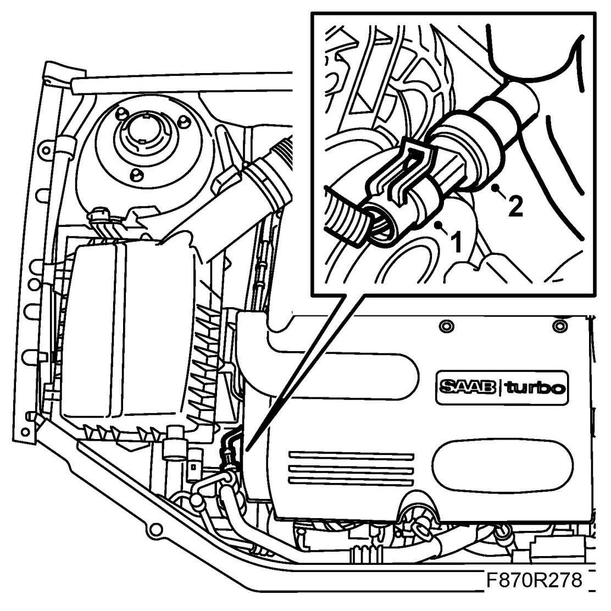
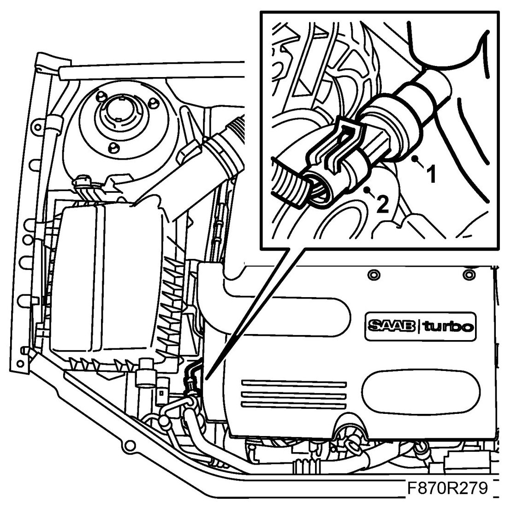

Pressure Sensor
Pressure Sensor
To remove
1. Dismantle the manifold absolute pressure sensor's connector.

2. Dismantle the manifold absolute pressure sensor.
To fit
1. Fit the manifold absolute pressure sensor.

2. Connect the manifold absolute pressure sensor's connector.